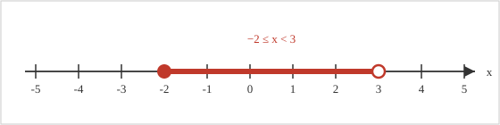

Based on Cambridge IGCSE Mathematics Core and Extended Coursebook, 3rd edition (Karen Morrison and Nick Hamshaw), Chapter 14 Further solving of equations and inequalities, printed pp.440–444 (number lines, Worked example 9 style, algebraic solution as in Worked example 10, and the warning about reversing the inequality). Printed pages were read from rendered scans of part_044 (printed 440–444). Own wording and new numbers.
Key words: linear inequality, number line
A linear inequality is a statement such as \(x<4\) or \(2x-3\geqslant 7\). Its solutions form a range of values, not just one number. Those values can be shown on a number line: an open circle means the end-point is not included, and a filled circle means it is included.

You may add or subtract the same number on both sides, and you may multiply or divide both sides by a positive number, just as you would with an equation. The result is a range: every number that satisfies the inequality is a solution.
Book: Worked example 10 style, printed pp.442–443. New numbers.
Find the set of values of \(x\) that satisfy \(5x-4\leqslant 2x+11\).
Answer: \(x\leqslant 5\)
If you multiply or divide both sides of an inequality by a negative number, you must reverse the inequality sign. (A safer habit, when you can, is to collect the \(x\)-terms so that the coefficient of \(x\) stays positive.)
Book: the warning on printed pp.443–444. New numbers.
Solve \(7-4x>19\).
Answer: \(x<-3\)
Solve \(4x-7\leqslant 13\). The solution is \(x\leqslant k\). What is the value of \(k\)?
Answer: \(5\)
What is the largest integer \(x\) that satisfies \(2<x\leqslant 7\)?
Answer: \(7\)
Solve \(5-2x>11\). The solution is \(x<k\). What is the value of \(k\)?
Answer: \(-3\)
Marks: M = method, A = accurate answer (depends on M), B = independent mark. Leave exact values exact.